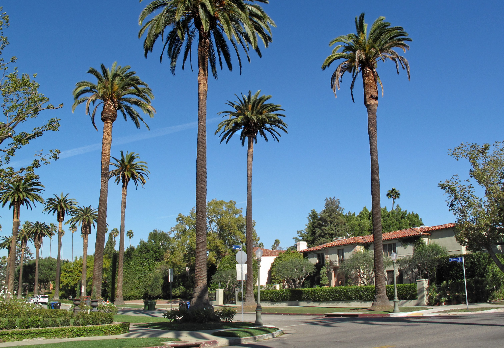
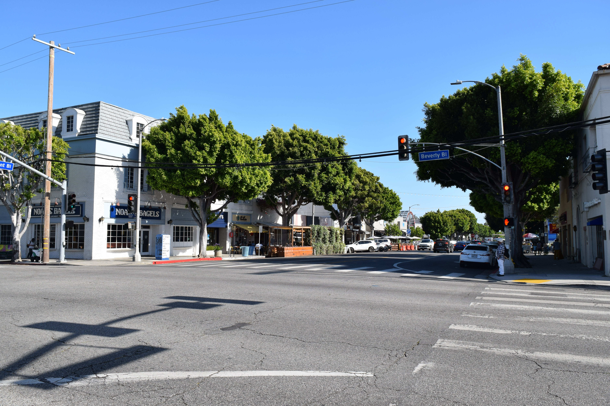
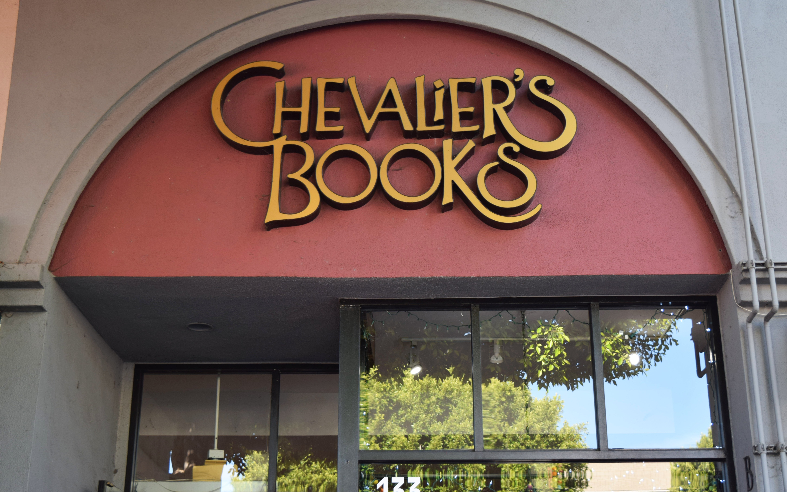
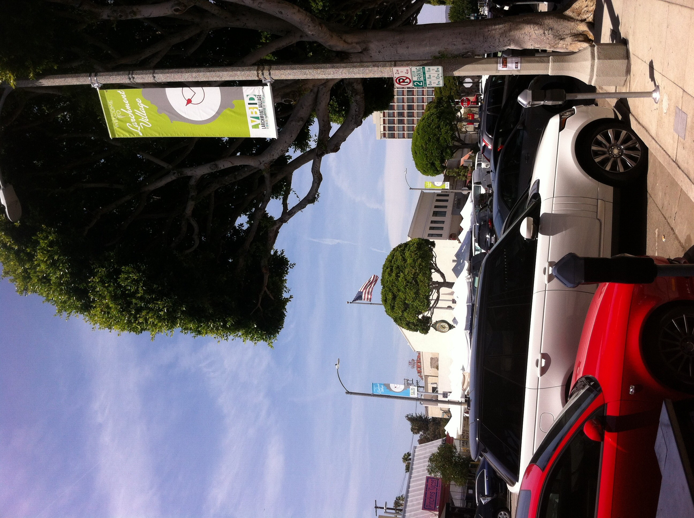
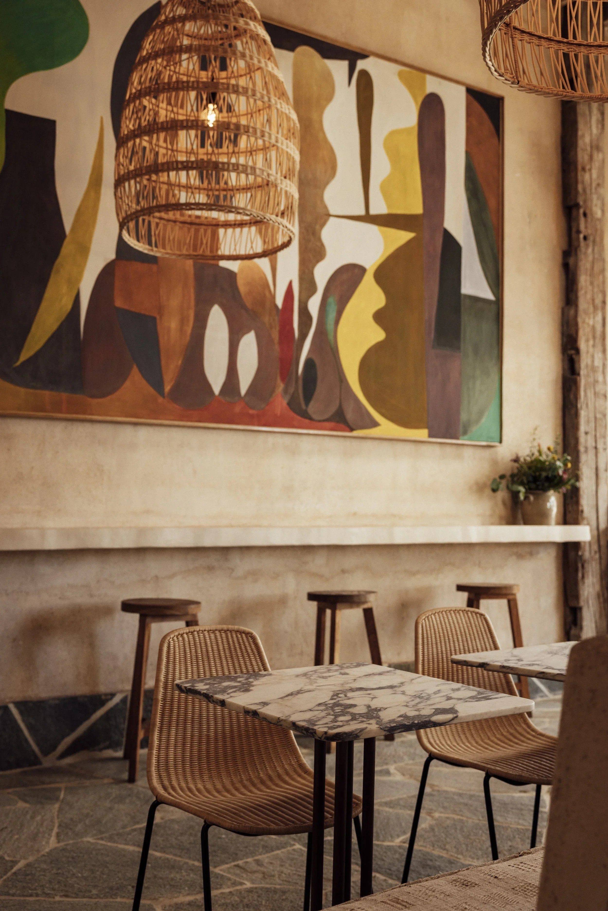
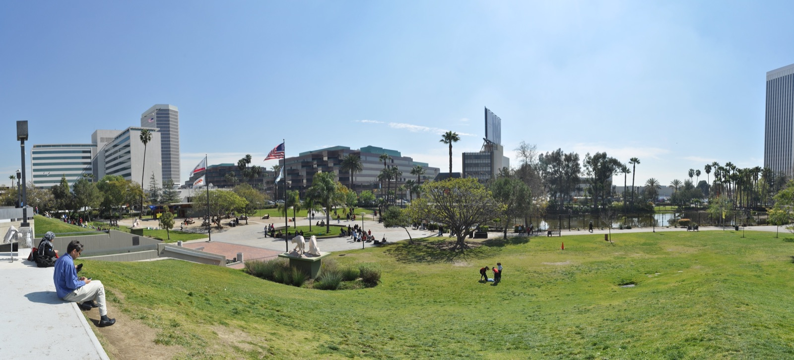
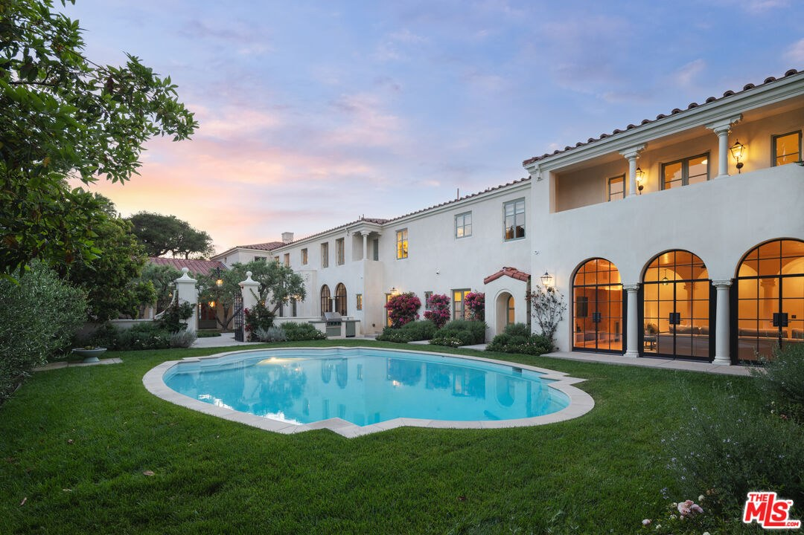

Hancock
Park

Is Hancock Park a good place to live?
Yes, if what you want is real 1920s architecture on deep, quiet, tree-lined lots, five minutes from one of the most genuinely walkable small commercial streets left in Los Angeles. The honest tradeoff is that Hancock Park itself, beyond Larchmont’s few blocks, is a car-dependent neighborhood by design. You’ll drive or stroll over to Larchmont for coffee and dinner, and most people who live here are glad to.
- Developed
- 1920s
- Walk Score
- 45 / 100
- Historic district
- HPOZ since 2007
- Homes
- About 1,200
Boundaries and development history via the Hancock Park Homeowners Association and LA Conservancy. Walkability varies by exact address.
Hancock Park Real Estate Agent
What it actually feels like to live here.
Hancock Park was built as a complete idea, not a neighborhood that grew in over time. G. Allan Hancock subdivided the land in the 1920s and set the rules himself: every home 50 feet back from the street, a side driveway through a porte cochère to a garage in back, and the city’s best period architects brought in to fill it out.
What makes it hold up now is how much of that original idea is still standing. The city designated it a Historic Preservation Overlay Zone in 2007, and around 90 percent of the roughly 1,200 homes still show their original street-facing 1920s facades.
The honest tradeoff is walkability. This is a quiet, car-oriented neighborhood by design, and if you want to walk to coffee or dinner, that life is one block over on Larchmont, not inside Hancock Park itself.
Let me give you a tourSunday market · coffee to closing time
The street that explains Hancock Park.
Larchmont Boulevard runs along Hancock Park’s western edge, and it is the closest thing this quiet neighborhood has to a front porch. On Sundays, the farmers market fills the city lot at Larchmont and 3rd and pulls the neighborhood onto the same few blocks.
The rest of the week it is Chevalier’s Books, Los Angeles’ oldest independent bookstore, Great White’s coffee line, neighborhood restaurants, and boutiques under a canopy of trees that actually shade the sidewalk.
Explore Larchmont VillageWhere in LA is Hancock Park?
Hancock Park sits in central LA, south of Hollywood and Melrose Avenue, north of Wilshire Boulevard and Koreatown, roughly between Highland Avenue on the west and Rossmore Avenue on the east. Larchmont Village, Windsor Square, and Fremont Place sit alongside or within that footprint.
The Wilshire Country Club’s course splits the neighborhood, with Beverly Boulevard running through the middle and a narrow tunnel connecting the two halves.
The useful distinction: the 23-acre public park called Hancock Park—the one with the La Brea Tar Pits, the Page Museum, and LACMA—is about a mile away on Wilshire. Same Hancock family name, two different places.
Places I keep sending people to.
The books, market, coffee, and dinner spots that pull the neighborhood toward Larchmont.
Swipe to browse the places

Chevalier’s Books
Los Angeles’ oldest independent bookstore, open on Larchmont since 1940 and still a real literary anchor for the street.

Larchmont Farmers Market
The Sunday ritual at Larchmont and 3rd: produce, prepared food, flowers, and the few hours when the whole neighborhood seems to share one sidewalk.

Great White
An all-day café and reliable coffee stop with a bright room, a bold mural, and the kind of breakfast that works before errands or after the market.
Osteria Mamma
A neighborhood Italian restaurant near Larchmont and Melrose, serving handmade pasta and a warm, unfussy dinner since 2011.
Schools in and around Hancock Park
Third Street ElementaryPublic · K–5 · 201 S June St
Van Ness Avenue ElementaryPublic · K–5 · 501 N Van Ness Ave
John Burroughs Middle SchoolPublic · 6–8
Marlborough SchoolPrivate · Girls · 7–12
School assignments and program eligibility depend on the exact property address and may change. Verify a specific home through the LAUSD School Directory; private-school admission is separate.
Green space, honestly framed
Photo: Los Angeles Times Photographic Collection, UCLA Library / CC BY 4.0.
Wilshire Country Club
The private course visually functions as Hancock Park’s green heart, but it is not public parkland. The large lots and fairways are part of why the neighborhood feels green—and why there is no big public park inside its residential boundary.

Photo: Joe Mabel / CC BY-SA 3.0.
Hancock Park at the La Brea Tar Pits
The actual public park is about a mile away near Wilshire and Curson, outside the neighborhood itself. It is still a genuinely useful nearby outing, with open lawn, the tar pits, and the museums along Museum Row.
Hancock Park houses that make the case.
From The Zonshine Edit.

Obsession No. 015
402 S Las Palmas Ave
A 1928 Mediterranean estate restored with original architecture, saturated color, contemporary art, arched loggias, and nearly half an acre of grounds.
Read the house story →Hancock Park on your mind? I’ve got you.
If grand 1920s architecture and real quiet matter more to you than being able to walk to dinner, I can walk you through exactly which blocks give you that and what the tradeoff actually costs.
Let’s start hereHighland ParkLos FelizPasadenaSherman OaksSilver LakeStudio CityWoodland Hills